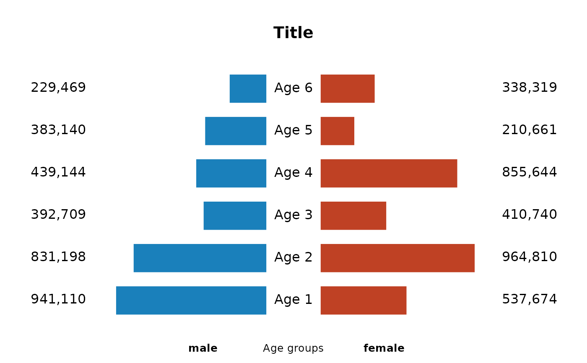
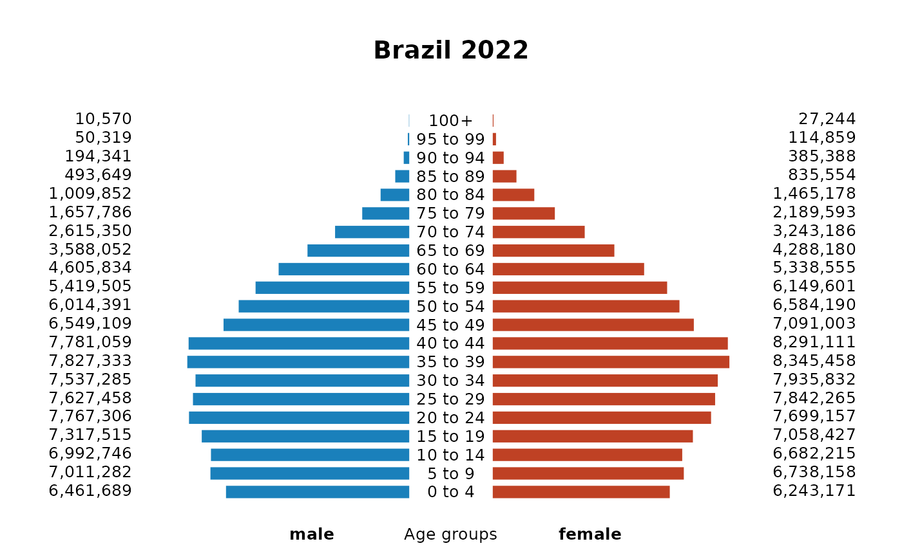

A graph showing the distribution of age groups within a population, divided by sex
Arguments
- x
a vector of values for the left side of the graph.
- y
a vector of values for the right side of the graph.
- main
main title.
- a
a numerical value that controls the size of the horizontal space between the bars. The default is 1.5.
- corb
a vector of colors to be used to fill the bars. The default is
c("#bf4124","#1a80bb").- border
the color of the border around the bars. The default is
"black".- legm
a label vector for the bars, which will be displayed in the centre of the chart. If this is not specified, 'Age 1', 'Age 2', and so on will be displayed.
- cexlegm
a numerical value that controls the size of the labels for the bars. The default is 1.
- cexleg
a numerical value that controls the size of the of labels at the bottom of the plot. The default is 1.
- xleg
a label showed at the bottom of the plot. The default is
"Age groups".- labgroups
a label vector for the left and right sides of the graph. The default is
c("male","female").- big.mark
the symbol used to add thousands separators to large numbers, making them easier to read. The default is
",".
Details
This function produces a graph similar to an age pyramid. It shows the distribution of various age groups within a population, divided by sex. Males are displayed on the left and females on the right, with the youngest age groups at the base and the oldest at the top.
Examples
## Example 1
x <- sample(100000:999999,6)
y <- sample(100000:999999,6)
bar2plot(x,y,main="Title",cexleg=0.8,border=NA)

## Example 2
# Brazilian population. Demographic census, 2022.
# Data from the Brazilian Institute of Geography and Statistics (IBGE)
x <- c(6461689, 7011282, 6992746, 7317515, 7767306, 7627458, 7537285,
7827333, 7781059, 6549109, 6014391, 5419505, 4605834, 3588052,
2615350, 1657786, 1009852, 493649, 194341, 50319, 10570)
y <- c(6243171, 6738158, 6682215, 7058427, 7699157, 7842265, 7935832,
8345458, 8291111, 7091003, 6584190, 6149601, 5338555, 4288180,
3243186, 2189593, 1465178, 835554, 385388, 114859, 27244)
ages <- c("0 to 4", "5 to 9", "10 to 14", "15 to 19", "20 to 24",
"25 to 29", "30 to 34", "35 to 39", "40 to 44", "45 to 49",
"50 to 54", "55 to 59", "60 to 64", "65 to 69", "70 to 74",
"75 to 79", "80 to 84", "85 to 89", "90 to 94", "95 to 99",
"100+")
bar2plot(x,y,main="Brazil 2022",cexleg=0.8,border=NA,legm=ages,cexlegm=0.8)
